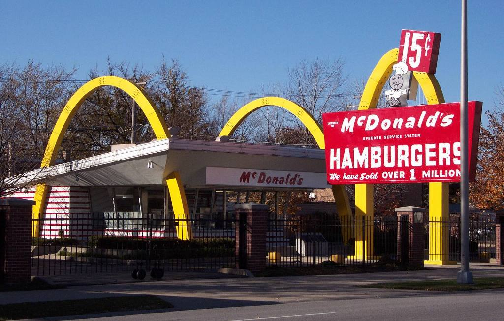

歷史
麥當勞歷史
1940年：理察和莫里斯·麥當勞兄弟在美國聖貝納迪諾 (加利福尼亞州)創立「Dick and Mac McDonald」餐廳，今日麥當勞餐廳前身。
1948年：引入「快速服務系統」(Speedee Service System)，首創立快餐原則。源自1920年代創立於美國堪薩斯州威奇塔市的白城堡
漢堡店（White Castle），白城堡漢堡店創辦人安德森，將裝配線觀念引入漢堡業，快速標準烹煮生產漢堡，被麥當勞等業者模仿，
然而白城堡漢堡股票未上市，以純私人企業方式在美國中西部作連鎖經營，規模小於麥當勞。
1955年4月15日：行政總裁雷·克羅克（Ray Kroc）在伊利諾州德斯普蘭斯（Des Plains）成立特許經營公司——麥當勞系統公司
（McDonald's System Inc.），以加盟經銷權在李街（Lee Street）開設首個麥當勞餐廳，是麥當勞第九分店。
1960年：麥當勞系統公司更名為麥當勞公司。
1961年：雷·克羅克以270萬美元收購麥當勞兄弟十家餐廳。漢堡大學在伊利諾州埃爾克格羅夫村（Elk Grove Village）成立，為全世界麥
當勞經理提供專門訓練。
1962年：售出第10億個漢堡，羅納德麥當勞叔叔在華盛頓市首度亮相。
1965年4月15日：麥當勞股票正式上市，每股定價22.5美金。
1967年：在加拿大開設第一家國際餐廳。
1968年：「巨無霸」面世，成立國際業務部。
1972年：麥當勞資產值達10億美元。
1974年：第一間麥當勞叔叔之家在賓夕法尼亞州費城設立，專門為接受癌病或其他致命疾病治療兒童的家人而設。
1977年：正式在全美餐廳中增加多款套餐。
1980年：成立25周年，麥當勞在香港開設第1000家國際餐廳，國際營業額首次突破10億美元。
1984年：售出第500億個漢堡；雷·克羅克病逝，享年81歲；為了紀念，公司成立了麥當勞叔叔兒童慈善基金，資助各類兒童計劃，範圍遍及
醫療保健、醫療研究、教育藝術、公民與社會服務。
1988年：第10,000家麥當勞餐廳成立。
2002年：賣出第1000億個漢堡。

麥當勞介紹第一頁
菜單
環境
心得